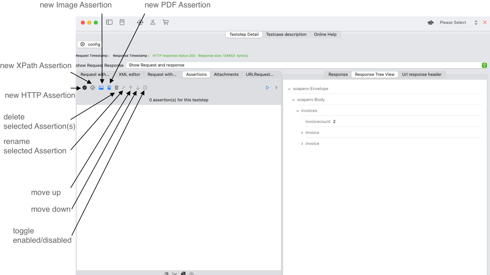

SOAP Teststep
A SOAP Teststep is a WSDL-aware Teststep that reference a specific webservice method.
You have request and response area with various that help you manage the complexity of SOAP-XML data models based on WSDL-XSD-Schema definition.
Run your SOAP request and verify the response. You can view the HTTP header fields for request and response. A Soap Teststep is created based on a WSDL operation either for a SOAP 1.1 or SOAP 1.2 WsdlService Port

Overview
The SOAP Teststep View provides a number of sub views and configuration options.
- Teststep configuration options that effects request and response handling.
- A Request view with a number of views that shows request information
- A Response view with a number of views that show response information
Teststep configuration options
Teststep configuration view
-
Send Request with MTOM will transform your request in the required MTOM request format and replace all occurrences of elements of type {http://www.w3.org/2005/05/xmlmime} base64Binary with the {http://www.w3.org/2004/08/xop/include }Include. It will apply all required transformations to create a valid MTOM optimized request.
-
Resolve XOP:include in Response transforms an MTOM-optimized response to a response without optimizations. It will inline the SOAPAttachment data and transform all occurrences of {http://www.w3.org/2004/08/xop/include }Include with {http://www.w3.org/2005/05/xmlmime} base64Binary
- Webservice url is required to send the request to the webservice endpoint under test. If you choose to use View Environment and have configured the webservice urls for this WSDL and the selected Run Environment, the url becomes non-editable. If no authentication is selected the HTTP header autorization is omitted otherwise sent with the base64 encoded string of username for basic authentication and password for basic authentication as displayed in preview base64 encoded authentication string.
- WSDL operation reference is a required setting for a SOAP Teststep. APIJockey TEST uses the WSDL-definitions to validate the request and the response. It allows for using MTOM-optimized requests as described above. When you click on the binocular button, you will get a dialog with a list of WSDL definitions with their SOAP 1.1. and SOAP 1.2 operations.
- Authentication options include no authentication, basic authentication with username and password and bearer authentication with bearer token in a free to define http header.
SOAP Request editor overview
The request view contains several tabs to display different information
- Request with variables your XML editor with syntax highlighting
- XML editor is a visual tree-like editor that allows you to edit XML elements with text content and select variables.
- Request with variable values resolved. Viewer that resolves values of Variables
- Assertions based on simplified XPath that assert occurrences of specified elements. Details see below
- Attachments allow for selection and preview of documents that you want to send with your request.
- URLRequest Details displays the HTTP headers used to create the request.
Tab Request with variables
-
Run Teststep will send the request to the specified URL, wait for the response and run all assertions against the response.
-
Request editor is your Syntax-Highlighting editor to work on your request
-
Create new request from WSDL operation will delete your current request and create a new one based on the current WSDL operation information.
-
Validate request will validate against the WSDL operation information and displays errors in case of non-conformance with this specification.
-
Pretty print XML does indents and create newlines for each element.
You enter your request in this syntax highlighting XML editor. Variables are colored to make them easy to distinguish, see Variables

XML editor
The XML editor provides an additional edit option, with focus on XML elements that have text content and where the structure does not need to be changed. This is often the case for existing requests where values only need to be variable-ized or just changed.
NOTE: Press the ENTER key when editing is done to update the underlying xml.

Request with variable values resolved
When you use variables, see Variables their name/value will be represented as follows:
- tab Request with Variables as a highlighted variable identifier
- tab XML editor no highlighting of the variable identifier
- tab Request with Variables resolved with the current variable value, Attachment references are NOT resolved
When you switch from your request editor to this tab, APIJockey TEST will reevaluate the variables and resolve these as it does when sending the request. Bear in mind that this is only a viewer.
SOAP Attachments
The SOAP Request editor provides a tab Attachments to edit, update and delete attachments

Command overview
- Create new attachment adds a new enty in the attachments list. You need to load the actual content later, as in the screenshot.
- Delete removes the selected attachments from the attachments list. The local file disc content is not removed.
- Rename lets you change the name of the selected attachment. The attachment name is not used in the request and helps you organize your attachment list.
- Move Up changes the order of the selected attachment entries. This has not impact on the request
- Move Down changes the order of the selected attachment entries. This has not impact on the request
- Load from disc opens a file open dialog where you can select the file to attach. Select and confirm will load the file contents and insert them to the attachment entry, It will try to recognizes the appropriate MIME type.
- Edit MIME type lets you set your own MIME type that is uses in the request
Create a new attachment
Click with your mouse on the button Create new attachment. This will open a new dialog.
![Dialog new SOAPRequestAttachment] (storage/Dialogs-NewSOAPRequestAttachment.png)
Enter the name (e.g. invoice) and confirm with OK. This will create a new attachment as in the screenshot above. Click with your mouse on the button Load from disc to insert the local file contents. In the screenshot this is an invoice that should be sent with request to test an upload functionality. The content is - if supported - in the content preview

Supported Type
s The builtin attachments preview supports:
- PDF-Documents
- Images
- Text
If the content type is different, no preview is shown, the attachment will still be sent with the request.
Reference attachments
If you want to reference the attachment in the request editor, click with your mouse on the button Copy to Pasteboard. The Pasteboard will contain a string like so:
$(Attachment.CID:8FD11DF7-5DE5-49FD-A6A8-D1C7B1DB6A83@apijockey.com).
You can copy this text in any element like in the screenshot for the element msg:Data

Teststep Assertions
Testing webservices can become repetitive and cumbersome. Assertions help you to automate checks and free you from repetitive error-prone verifications. You will find more time to further explore responses and find unexpected behaviour. Assertions have their own tab in the SOAP Request view and allow you for editing assertions while viewing the Response.

APIJockey TEST supports the following assertions types
- create a new XPath Assertion to verify the SOAP Response with an XPath expresssion. APIJockey TEST will support you with a visual editor to enter the XPath and to define the type of verification.
- create a new HTTP Assertion HTTP Status, response time and data length.
-
create a new Image Assertion will create an AI-based Assertion that will assess Text and Barcode information from your image. Note: PDF-Documents are also considered images in this Assertion type.
-
create a new PDF Assertion will create a PDF Assertion that will assess Text and document property information from your PDF-Document. Note: Sometimes PDF-Documents contain images, only and no text will be found. In this case, you will need to use the Image Assertion type.
URL request header
This tab displays the HTTP header used with the last URL request and may be empty if no request has been sent after (re-)starting APIJockey TEST.
Searchable webservice definitions
Legal Note : The url and the webservice presented below have been provided by oorsprong.org and have been available without authentication. I use these resources for the only reason to illustrate the contextual help feature of APIJockey TEST. Do not misunderstand this as any kind of endorsement for and from oorsprong.org. The request itself has been created with the built-in functionality of APIJockey TEST to create a sample from a WSDL.
Let's assume a sample request created from the WSDL.
When working with these APIs, you would probably search the XSD-files for more information.
In such a case drag with your mouse the element name that you need information about while holding the CMD-key
If you want to search for elements or types not present in the current request or response hold the CMD key while you double click with your mouse.
Be aware that for processing search with namespace prefixes, the search must be able to locate the correponding XSD-file. This is only possible, if the prefix is defined in the namespace definitions and you hold a valid XML document. If this is not the case, you can search for an element or type in a specific namespace with this notation:
-
{http://my.namespace.com/context}Elementname
-
{http://my.namespace.com/context}Typename